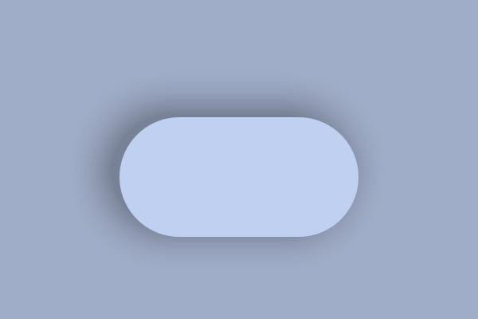
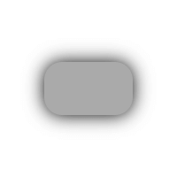
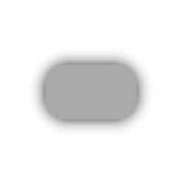
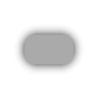
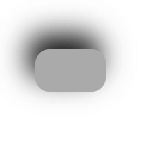
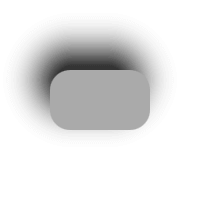
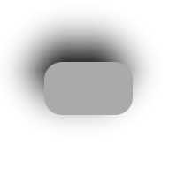
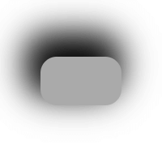
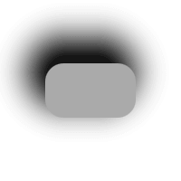
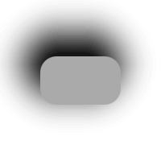

RectangularShadow QML Type
Creates smoothed rectangle, suitable for example for shadow and glow effects. More...
| Import Statement: | import QtQuick.Effects |
| Inherits: |
Properties
- antialiasing : bool
- blur : real
- cached : bool
- color : color
- material : item
- offset : vector2d
- radius : real
- spread : real
Detailed Description
RectangularShadow is a rounded rectangle with blur applied. The performance of RectangularShadow is much better than a general one that creates blurred shadow/glow of any shaped item.
The following example shows how to add a shadow to a Rectangle:
 |
import QtQuick
import QtQuick.Effects
...
RectangularShadow {
anchors.fill: myRectangle
offset.x: -10
offset.y: -5
radius: myRectangle.radius
blur: 30
spread: 10
color: Qt.darker(myRectangle.color, 1.6)
}
Rectangle {
id: myRectangle
anchors.centerIn: parent
width: 200
height: 100
radius: 50
color: "#c0d0f0"
}
|
The API of RectangularShadow is similar to CSS box-shadow, with color, offset, spread, and blur values. Additionally, RectangularShadow API contains:
realradius: Controls the rounding radius applied to rectangle corners. Compared to CSS box-shadow, which inherits radius from the parent element, RectangularShadow expects user to set it. This allows you to use different radiuses and move the RectangularShadow separately from its parent item.boolcached: Allows caching the blurred shadow texture. This increases memory usage while potentially improving rendering performance, especially with bigger shadows that don't change dynamically.itemmaterial: Contains the ShaderEffect element of the RectangularShadow for advanced use. This allows, for example, extending the effect with a custom shader.
The rendering output also matches the CSS box-shadow, with few notable differences. These differences exist to make the RectangularShadow as high-performance as possible.
- Blurring is calculated mathematically in the shader rather than using Gaussian blur, which CSS box-shadow implementations often use. This makes the shadow look slightly different, especially with larger blur values.
- All the rectangle corners must have an even radius. When creating a shadow for a Rectangle with different radiuses, select the best-matching radius for the shadow or use an alternative shadow method, for example, MultiEffect.
Here is a table with screenshots to compare the rendering output of RectangularShadow and CSS box-shadow in the Chrome browser. The right-most element is RectangularShadow in blur multiplied with 1.2 (so 24, 48, 48) for a closer match.
| type | CSS box-shadow | RectangularShadow | RectangularShadow + extra blur |
|---|---|---|---|
| offset: (0, 0) blur: 20 spread: 0 |  |  |  |
| offset: (-10, -20) blur: 40 spread: 0 |  |  |  |
| offset: (-10, -20) blur: 40 spread: 10 |  |  |  |
RectangularShadow extends the shadow size with an exact amount regarding the blur amount, while some other shadows (including CSS box-shadow) have a multiplier for the size. The size of the shadow item inside a RectangularShadow is:
width = rectangularShadow.width + 2 * blur + 2 * spread height = rectangularShadow.height + 2 * blur + 2 * spread
For example, the shadow item size of the code below is 280x180 pixels. Radius or offset values do not affect the shadow item size.
RectangularShadow { width: 200 height: 100 blur: 30 spread: 10 radius: 20 }
Property Documentation
antialiasing : bool |
Used to decide if the shadow should use antialiasing or not. When this is true, a single pixel antialiasing is used even when the blur is 0.
The default value is true.
blur : real |
This property defines how many pixels outside the item area are reached by the shadow.
The value ranges from 0.0 (no blur) to inf (infinite blur). The default value is 10.0.
Note: To match with the CSS box-shadow rendering output, the optimal blur amount is something like: 1.2 * cssBlur
cached : bool |
This property allows the effect output pixels to be cached in order to improve the rendering performance.
Every time the effect properties are changed, the pixels in the cache must be updated. Memory consumption is increased, because an extra buffer of memory is required for storing the effect output.
It is recommended to disable the cache when the source or the effect properties are animated.
The default value is false.
color : color |
This property defines the RGBA color value that is used for the shadow.
The default value is Qt.rgba(0.0, 0.0, 0.0, 1.0) (black).
material : item |
This property contains the ShaderEffect item of the shadow. You can use this property to visualize the reach of the shadow, because the effect item often has different position and size than the RectangularShadow item, due to blur, offset and spread.
The material can also be replaced with a custom one. The default material is a ShaderEffect with the following fragmentShader:
#version 440
layout(location = 0) in vec2 texCoord;
layout(location = 1) in vec2 fragCoord;
layout(location = 0) out vec4 fragColor;
layout(std140, binding = 0) uniform buf {
mat4 qt_Matrix;
float qt_Opacity;
vec4 color;
vec3 iResolution;
vec2 rectSize;
float radius;
float blur;
};
float roundedBox(vec2 centerPos, vec2 size, float radii) {
return length(max(abs(centerPos) - size + radii, 0.0)) - radii;
}
void main()
{
float box = roundedBox(fragCoord - iResolution.xy * 0.5, rectSize, radius);
float a = 1.0 - smoothstep(0.0, blur, box);
fragColor = color * qt_Opacity * a * a;
}
Qt Quick Effect Maker contains the RectangularShadow node that can be used as a starting point for a custom material. You can directly use the exported effect containing that node as a RectangularShadow material.
RectangularShadow {
...
material: MyShadowEffect { }
}
To return to use the default material, set the material property to null.
offset : vector2d |
This property defines the position offset that is used for the shadow. This offset is appended to the shadow position, relative to the RectangularShadow item position.
The default value is Qt.vector2d(0.0, 0.0) (no offset).
radius : real |
This property defines the corner radius that is used to draw a shadow with rounded corners.
The value ranges from 0.0 to half of the effective width or height of the item, whichever is smaller.
The default value is 0.
spread : real |
This property defines how much the shadow is spread (extended) in pixels. This spread is appended to the shadow size, relative to the RectangularShadow item size.
The value ranges from -inf to inf. The default value is 0.0.
Note: The radius behavior with spread matches to CSS box-shadow standard. So when the spread is smaller than the radius, the shadow radius grows by the amount of spread. When the spread grows bigger, radius grows only partially. See https://www.w3.org/TR/css-backgrounds-3/#shadow-shape. If the shadow radius should grow in sync when the shadow grows (like with the Firefox CSS box-shadow implementation), increase the RectangularShadow width and height instead of using the spread.